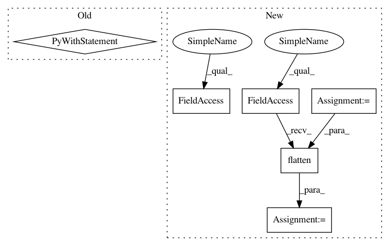

a281f8a17967302aa382881d5473b2993843fc6d,tf_agents/utils/tensor_normalizer.py,StreamingTensorNormalizer,_update_ops,#StreamingTensorNormalizer#Any#Any#,244
Before Change
// Ops to update streaming norm. Make sure that all stats are computed
// before updates are performed.
with tf.control_dependencies([num_samples, mean_sum, var_sum]):
update_ops = [
tf.compat.v1.assign_add(
self._count,
tf.ones_like(self._count) * num_samples,
name="update_count"),
tf.compat.v1.assign_add(
self._mean_sum, mean_sum, name="update_mean_sum"),
tf.compat.v1.assign_add(
self._var_sum, var_sum, name="update_var_sum"),
]
return update_ops
def _get_mean_var_estimates(self):
Returns this normalizer"s current estimates for mean & variance.
After Change
mean_estimate, _ = self._get_mean_var_estimates()
// Aggregate update ops for all parts of potentially nested tensor.
updates = tf.nest.map_structure(
_tensor_update_ops, tensor, mean_estimate, self._count, self._mean_sum,
self._var_sum)
all_update_ops = tf.nest.flatten(updates)
return all_update_ops
def _get_mean_var_estimates(self):
In pattern: SUPERPATTERN
Frequency: 3
Non-data size: 6
Instances
Project Name: tensorflow/agents
Commit Name: a281f8a17967302aa382881d5473b2993843fc6d
Time: 2019-02-20
Author: eholly@google.com
File Name: tf_agents/utils/tensor_normalizer.py
Class Name: StreamingTensorNormalizer
Method Name: _update_ops
Project Name: tensorflow/agents
Commit Name: 452cf41746dd7c4572b6e6766185431bce7f5ee1
Time: 2020-05-01
Author: no-reply@google.com
File Name: tf_agents/agents/ddpg/critic_rnn_network.py
Class Name: CriticRnnNetwork
Method Name: call
Project Name: tensorflow/agents
Commit Name: 452cf41746dd7c4572b6e6766185431bce7f5ee1
Time: 2020-05-01
Author: no-reply@google.com
File Name: tf_agents/networks/lstm_encoding_network.py
Class Name: LSTMEncodingNetwork
Method Name: call